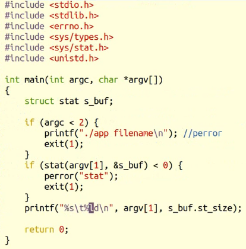

inode函数介绍
一、文件操作
1.stat
#include <sys/types.h>
#include <sys/stat.h>
#include <unistd.h>
int stat(const char *path, struct stat *buf); //把文件信息传到结构体中
int fstat(int fd, struct stat *buf);
int lstat(const char *path, struct stat *buf);
stat既有命令也有同名函数，用来获取文件Inode里主要信息，stat 跟踪符号链接，lstat不跟踪符号链接
stat里面时间辨析：
atime(最近访问时间)：
mtime(最近更改时间):指最近修改文件内容的时间
ctime(最 近改动时间)：指最近改动Inode的时间

2.access
#include <unistd.h>
int access(const char *pathname, int mode); //成功返回0，失败返回-1
按实际用户ID和实际组ID测试,跟踪符号链接（找到实际的文件）
mode:
R_OK 是否有读权限
W_OK 是否有写权限
X_OK 是否有执行权限
F_OK 测试一个文件是否存在
实际用户ID：当前用户
有效用户ID：root
sudo执行时，有效用户ID是root，实际用户ID是SHLN

3.chmod
#include <sys/stat.h>
int chmod(const char *path, mode_t mode); //mode是八进制
int fchmod(int fd, mode_t mode);
./app 111(157) abc --->(---xr-xrwx)


4.chown
#include <unistd.h>
int chown(const char *path, uid_t owner, gid_t group);
int fchown(int fd, uid_t owner, gid_t group);
int lchown(const char *path, uid_t owner, gid_t group);
chown使用时必须拥有root权限。
5.utimes
#include <sys/time.h>
int utimes(const char *filename, const struct timeval times[2]);
//修改访问时间和修改时间
6.truncate(截断)
#include <unistd.h> #include <sys/types.h>
int truncate(const char *path, off_t length);
int ftruncate(int fd, off_t length);
open也可以截断，O_TRUNC将其长度截断为0
7.link
7.1link（硬链接）
#include <unistd.h>
int link(const char *oldpath, const char *newpath);
硬链接：inode一样，目录里有一样的记录项。inode的硬链接为0时才真正的删除
删除一个文件时，将inode的硬链接数减1，将目录中的相应的记录项删去
* 硬链接通常要求位于同一文件系统中,POSIX允许夸文件系统
* 符号链接没有文件系统限制
* 通常不允许创建目录的硬链接，某些unix系统下超级用户可以创建目录的硬链
* 创建目录项以及增加硬链接计数应当是一个原子操作
7.2symlink(符号链接)
int symlink(const char *oldpath, const char *newpath)
7.3readlink（读符号链接）
ssize_t readlink(const char *path, char *buf, size_t bufsiz)
//读符号链接所指向的文件名字，不读文件内容
将链接的文件存到buf中，返回读到的文件名的长度
7.4unlink
int unlink(const char *pathname)
1. 如果是符号链接，删除符号链接
2. 如果是硬链接，硬链接数减1，当减为0时，释放数据块和inode
3. 如果文件硬链接数为0，但有进程已打开该文件，并持有文件描述符，则等该进程关闭该文件时，kernel才真正去删除该文件
4. 利用该特性创建临时文件，先open或creat创建一个文件，马上unlink此文件
8.rename(文件重命名)
#include <stdio.h>
int rename(const char *oldpath, const char *newpath);
9.chdir(改变当前进程的工作目录)
#include <unistd.h>
int chdir(const char *path);
int fchdir(int fd); //改变到这个文件描述符（是一个目录）下
例如：cd /
10.getcwd（获取当前进程的工作目录）
#include <unistd.h>
char *getcwd(char *buf, size_t size); //存放到数组中去，返回路径

此时shell任然还是在原来的目录中，app的路径改为了/
11.pathconf（测试当前系统下一些资源限度，如文件名的最大长度，IO缓冲区大小）
#include <unistd.h>
long fpathconf(int fd, int name);
long pathconf(char *path, int name);

255
二、目录操作
1.mkdir
#include <sys/stat.h>
#include <sys/types.h>
int mkdir(const char *pathname, mode_t mode);
2.rmdir
#include <unistd.h>
int rmdir(const char *pathname);
3.opendir/fdopendir(打开一个目录)
#include <sys/types.h>
#include <dirent.h>
DIR *opendir(const char *name); //返回一个指向目录中记录项的指针
DIR *fdopendir(int fd);
4.readdir(读目录里的内容)
#include <dirent.h>
struct dirent *readdir(DIR *dirp); //readdir每次返回(指针指向)一条记录项指针，DIR*指针指向下一条记录项
读到文件末尾时返回NULL

5.rewinddir(把目录指针恢复到目录的起始位置)
#include <sys/types.h>
#include <dirent.h>
void rewinddir(DIR *dirp);
6.telldir/seekdir
#include <dirent.h>
long telldir(DIR *dirp); //返回目录指针在什么位置
#include <dirent.h>
void seekdir(DIR *dirp, long offset); //设置目录到什么位置
7.closedir（关闭释放目录）
#include <sys/types.h>
#include <dirent.h>
int closedir(DIR *dirp);